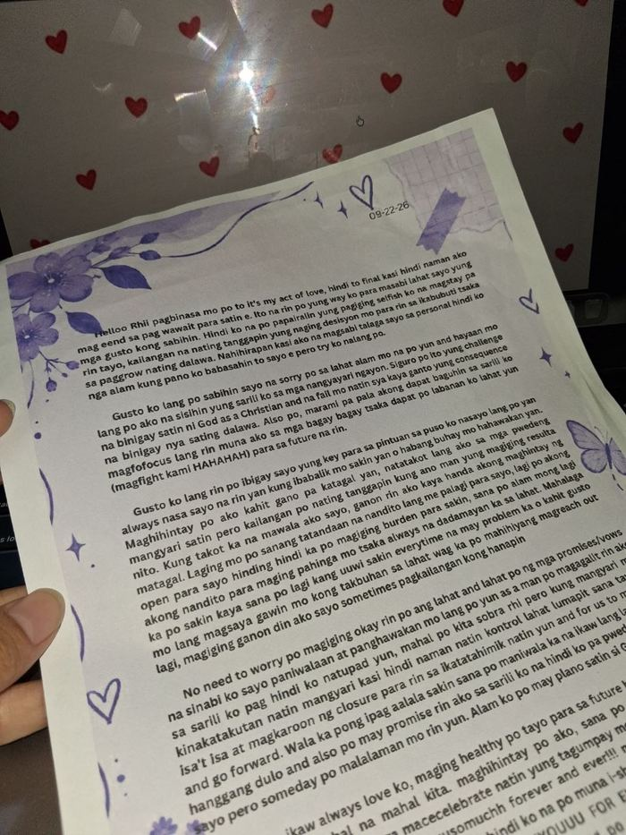

Happy 1st anniversary, Kinkin ko!
Walang katapusang pasasalamat love sa pagmamahal at pag-aalaga mo sa'kin. Salamat mahal ko for staying with me through worst and happiest moment sa life ko. Salamat sa pag-intindi at pagpapatawa sa'kin sa tuwing magkasama tayo sobrang happy ko po palagi pag anjan ka sa tabi ko. Mahal na mahal po kita 🥺❤️ Palagi po akong naniniwala at sumusuporta sa'yo. Susuportahan po kita sa lahat ng gusto mong gawin at alam kong magiging happy ka po kahit na hindi po kita kasama palagi, palagi ka naman pong kasama sa prayers ko. Rule no.1 ko po yun sa relationship natin love na ipagpray ka to be my lifetime partner/kingdom partner, pinagp-pray ko talaga and hinihingi yung better version natin sa isa't isa para mas maging God-centered yung relationship natin and maglead yun into good marriage. Love, salamat din kasi naging dahilan ka ng pagbabago ko when it comes sa open communication. Thankyou for being a good partner to me, my love. More years to come po sa'tin, more patience and understanding din po for the both of us. I will always love you, my first and last. Mwaps! 💕😘
— marmar
Hi, King!
This letter contains my words for you to keep and for me to hold on to. I want you to know that you are very special to me, and I really care for you as much as I love you. Thank you for understanding me and accepting the situation we have. Thank you for continuously loving me, trusting me, and being patient with us. I really do love you, and I trust you to keep your word as well. I know that this kind of love is rare nowadays. This waiting season and the distance are hard for both of us, but I still believe that this kind of love still exists, and I believe that we will overcome it, okay? I have a request, my love. My request is for you to be confident and trust me that I will choose you over and over again. This is my request, so do it for me, okay? 🥺 I want to give you peace of mind and assure you that you are the only man I want to love and the only man I want to be with in the future. I love you, my Kinkin! ❤️
(check mo lang ’tong website kapag namimiss or iniisip mo ako, mwaps! 💋)
— marmar
His Letter to Me
kinkin’s words

9.22.26
“For where your treasure is, there your heart will be also.” — Matthew 6:21
King, I want to share this verse with you because somehow, when I read it, pumasok ka sa isip ko.
Before anything else, I dedicate this verse to the Lord, because He will always be the greatest treasure of my heart. Everything I feel and everything I value, I want to surrender to Him first. And maybe one of the reasons He allowed you to come into my life is for me to experience a kind of love that feels genuine, peaceful, and special.
I want you to know na I treasure you. Hindi lang because of the feelings I have for you, but because I’m genuinely grateful that God allowed our paths to meet. You became someone I care about, someone I think about, someone I pray for, and someone I’m thankful to have in my life.
I don’t want my love for you to ever come before my love for God. Instead, I want God to be at the center of whatever I feel for you. I want to love you with patience, respect, sincerity, and a heart that seeks God first.
So if ever you wonder how much you mean to me, maybe this verse explains it better than I could. You are someone my heart has learned to treasure, King. And while my heart belongs to God first, I’m grateful that He allowed a special place in it for you.
I don’t know what God has planned for us, but whatever it is, I’m thankful for you. And if loving someone means praying for them, appreciating them, and wishing the best for them, then I’m happy that you became someone I can treasure in that way.